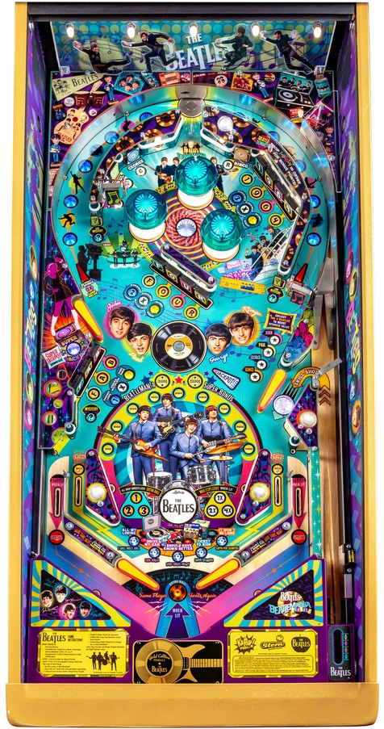

This guide applies to all three main editions of The Beatles pinball (the most common Gold, the rare Platinum, and the very rare Diamond editions).
This guide details the main Beatles mode for this pinball game. The machine can be set to a "classic mode" which fully recreates the rules of Seawitch, upon which The Beatles' playfield is based. For those rules, check out the dedicated page for Seawitch (Stern Electronics, 1980).
Play song modes. Use the flippers to select a mode to automatically begin at the start of each ball. If you complete a mode, play a new one by completing the Fab and Four drop targets, then shooting the big loop in either direction. All My Loving is a 2-ball quick multiball that can only be selected pre-plunge on ball 3: always do this if you can. Each mode has one specific playfield feature as its focus: shooting the focused feature advances the mode's "level" and its scoring value. Reasonably attainable wizard modes are available for simply playing all 5 modes or for getting them all to the maximum level of 5.
The below picture of The Beatles' playfield is an original promotional photo by Stern Pinball, as shown on the Internet Pinball Database.

The Beatles has three flavors of skill shot.
Plunging the ball also instantly starts whichever mode is quickly flashing out of the 5 coloured inserts near the flippers. The flashing mode can be changed before the ball is plunged by either waiting a few seconds for the flashing mode to change on its own, or using the flipper buttons to select one. See more about modes below.
Most of the core gameplay on The Beatles is done within one of five song modes. A song mode is started for free at the beginning of each ball, and which mode is selected to be started changes every few seconds before the ball is plunged or by using the flippers. If none of the five song modes are running, one can be started by completing the Fab drop targets in the lower left and the Four drop targets in the center, then shooting the big loop in either direction; pop bumpers will change which mode is selected.
All modes have a "level" system that tracks progress within the mode, which is used to determine eligibility for the game's wizard modes. Also, with the exception of All My Loving, all modes are timed to 30 seconds, and the first Mystery award within the song mode will always be to add 15 seconds to the mode timer. Timers are paused while the ball is rattling around the pop bumpers.
The 5 main song modes are:
Reaching Level 5 in a mode scores 100,000 points, but the mode continues for as long as there is time.
After advancing any mode to at least Level 3, the Super Jackpot target is lit behind the Fab drop targets. If you complete the Fab bank, it will not reset if a Super Jackpot is lit until that Super Jackpot is collected or another mode is started. The Super Jackpot is equal to the value of all of the points collected during the previous mode. If you let the Super Jackpot ride and play another mode, the value of the Super Jackpot after that second mode will be 2x the first mode's value plus 1x the second mode's value. You can continue letting the value ride in this way, even stacking all 5 mode values on the Super Jackpot (5x the first, plus 4x the second, plus 3x the third, plus 2x the fourth, plus 1x the fifth). However, if you drain, the lit built-up Super Jackpot value is completely lost, making this an incredibly high-risk, high-reward feature. In a tournament setting, it's usually too dangerous to let the Super Jackpot ride at all, and it should usually just be collected as soon as it is lit.
Beatlemania is qualified after playing all 5 song modes. Depending on the exact game settings, it may be sufficient to just play all 5 song modes in any capacity, or you may need to get all 5 song modes to at least Level 3 to light Beatlemania. When Beatlemania is ready, it can be started by shooting the big loop, and is indicated by the Jackpot! arrow in the center of the playfield being lit white; you do not need to re-spell Fab Four to light it. Beatlemania is played in two phases.
After Beatlemania ends, if you do not have all modes progress to Level 5, you go back to playing the normal song modes. Song modes that have been advanced to Level 5 cannot be replayed. Level progress is preserved across multiple plays of a mode. When all modes reach Level 5 and there is no longer currently a mode running, Taxman wizard mode is lit.
When all 5 normal song modes are maxed out at Level 5, shoot either orbit to start Taxman Multiball wizard mode. It is possible to play Taxman without playing Beatlemania first if you get all 5 song modes to Level 5 the first time you play them. Taxman is a 4-ball multiball with another generous ball saver. The game displays that Super Loops, Drop Target Frenzy, Super Pops, and Super Spinners are all running, but never shows their value- presumably, all of them score as they do during Level 5 of a regular song mode. Also, the rules of A Hard Day's Night multiball are in play, but with a jackpot that appears to start at around 1,200,000 instead of 300,000. Jackpots are lit at the big loop by spelling Fab Four, and Super Jackpot is lit at its normal target for completing all three target banks. Hitting all four of the band member targets near the pop bumpers adds a ball to the playfield if there are not already 4 in play. The exact value of each feature in this mode is difficult to determine due to how much is going on at once, but even a short Taxman Multiball should score at least 5,000,000-8,000,000 points.
When single ball play resumes, all mode progress is reset to Level 1, and you can play through them again as normal to work back towards another Beatlemania or Taxman Multiball.
Each drop target down adds 1,000 points to the base bonus, up to a maximum of 75,000.
At any given time, one bank of drop targets will be lit with a white X. Completing this bank advances the bonus multiplier and moves the X to a different bank. The maximum bonus multiplier is 7x, which lights the out lanes alternately for Special based on slingshot hits. I believe, but have not confirmed, that Special scores 400,000 points in competition/novelty play.
Completing all 3 banks of drop targets in one ball lights one in lane for Special, alternating based on slingshot hits. Since there is no ramp or other major shot that feeds an in lane, the extra ball can be quite tricky to get. The simplest way to pick it up is to have it lit on the left in lane, then shoot the Super Jackpot target for the hidden lane feed that usually goes to the in lane. I believe, but have not confirmed, that Extra Ball scores 200,000 points in competition/novelty play.
After a drop target bank has been completed at least once, if there is ever any time later on the same ball where just 1 drop target is left standing, shooting that drop target collects your entire current base bonus, with no multiplier.
Completing the 1964 drop targets in order gives a score award, which I believe is equal to 50,000 points and may increase if achieved more than once. Don't go out of your way for this, as it's very hard to do on purpose.
Separate from Beatlemania wizard mode, a letter in the word Beatlemania is given for nearly any shot around the big loop during gameplay. There is a brief cooldown after getting one Beatlemania letter where you cannot get another, so if you're comboing the loop very quickly with the upper right flipper, some shots may not count. The first two Beatlemania awards are 2x Spinners and 5x Loops, and seem to last for the remainder of the ball.
Qualify the mystery award by hitting the two post targets, located just to the inside of the two orbit entrances. When mystery is qualified, hit the large standup target to the left of the Fab drops to collect it. Possible awards include the following; this is almost certainly not an exhaustive list.
The secret skill shot is not a skill shot in the conventional sense. Shooting the star rollover underneath the upper right flipper immediately after rolling through the left in lane scores 50,000 points instead of the star rollover's usual 5,000.
The Beatles has a conventional in/out lane setup. There is no center post or kickback. In lanes are lit alternate for extra ball by completing all 3 drop target banks at least once each. Out lanes are lit alternately for Special upon reaching 7x bonus multiplier. Slingshots alternate the location of the lit extra ball and Special.
Base bonus is increased by 1,000 points per drop target hit. Bonus multiplier is increased by completing the bank of drops lit with a white X. Max bonus is 7x 75,000 = 525,000 points. The unmultiplied base bonus can be collected mid-ball by completing a bank of drop targets that both 1) has already been completed on the current ball, and 2) has exactly one drop target still standing. The only way the bonus can be collected with multiplier mid-ball would be from a Beatlemania or Mystery award that I have not seen. Base bonus is only carried from ball to ball if the Hold Bonus mystery award has been earned. Bonus multiplier is always carried from ball to ball, unless it is maxed out at 7x, in which case it is reset to 3x for the next ball in play.
| If you need... | Try... |
| 100,000 points | ...starting any mode or comboing the loop a few times. |
| 500,000 points | ...advancing a mode to Level 5 or starting All My Loving quick multiball mode. |
| 1,000,000 points | ...playing 2 modes to completion as much as possible, or following up a strong playthrough of one more with a Super Jackpot. |
| 2,500,000 points | ...starting song modes as frequently as possible and doing the minimum effort required to reach Beatlemania Multiball, or stacking at least 2-3 Super Jackpots from song modes and collecting them all at once. |
| 5,000,000 points or more | ...beelining to Beatlemania or Taxman wizard modes by any means necessary, earning big points from multiballs. |